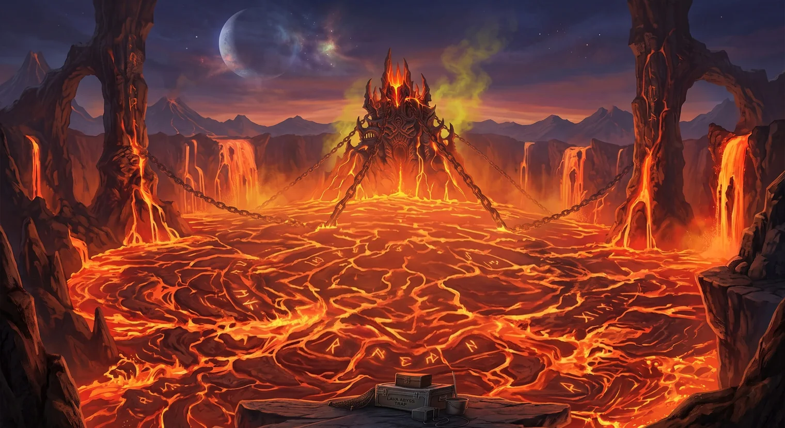
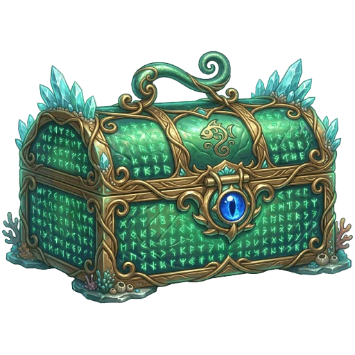
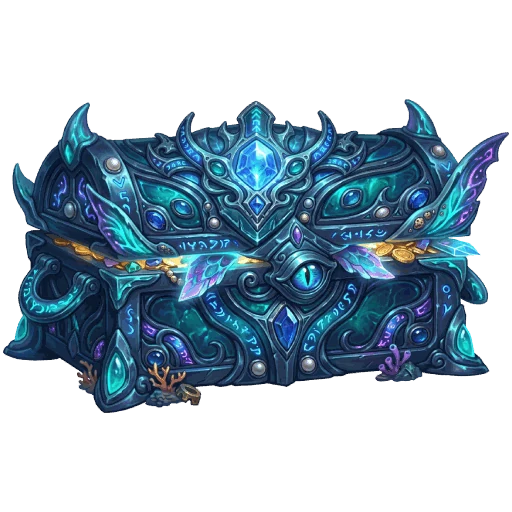
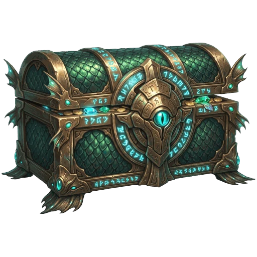
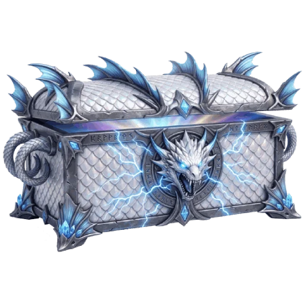
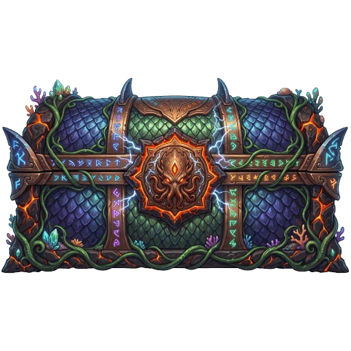
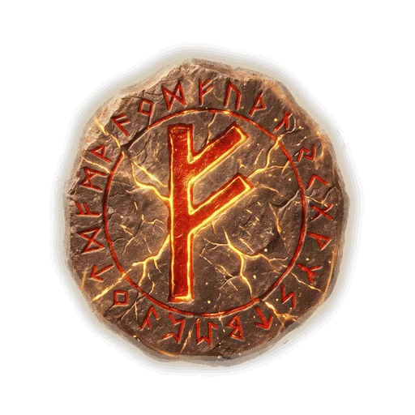
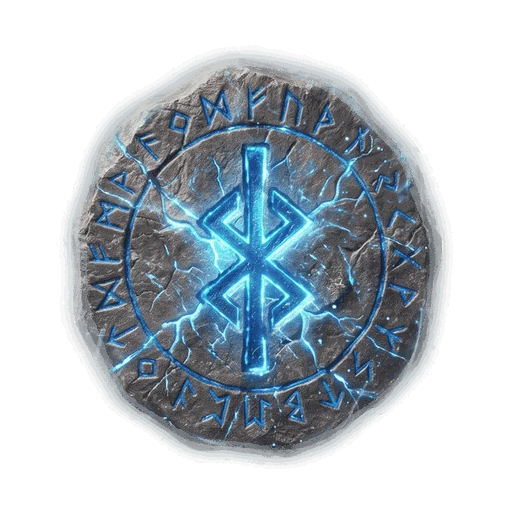
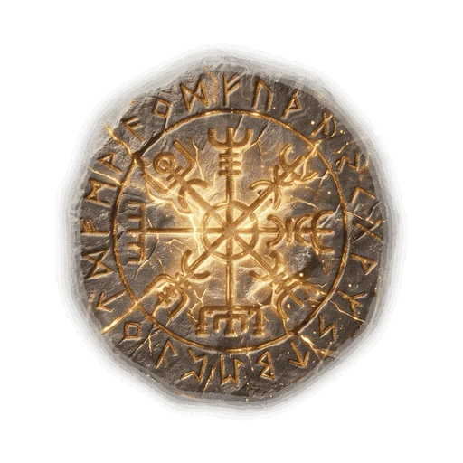

BOSS RAID · TROPHY
보스레이드 보상이 바뀝니다.
수상한 상자 여러 개 → 전리품 상자 하나
REWARD UPDATE
개수는 줄었지만, 안에 담긴 것이 달라졌습니다.
FIVE TROPHIES

1. 신성한 늪
크리스탈 · 룬 1
미끼 1통
물약 또는 카드 1

2. 신비한 바다
자수정 · 룬 1
미끼 1통
물약 또는 카드 1
능력치 엠블럼 1

3. 고대의 수로
사파이어 · 룬 1
미끼 1통
물약 또는 카드 2
능력치 엠블럼 1

4. 폭풍호수
루비 · 룬 1
미끼 1통
물약 또는 카드 2
이용권 · 입장권 · 엠블럼 중 1

5. 용암의 심연 · 화염 볼카르
다이아몬드 · 룬 1 · 미끼 1통 · 물약 또는 카드 3
낚시 1시간 이용권 · 아레나 입장권 · 능력치 엠블럼 모두
EXP & KREFT
보상 계산 방식이 바뀌었습니다.
RUNES

힘 +30

컨트롤 +30

감도 +30
보석은 물고기로, 룬은 보스로 얻는 재료입니다.
가방 「재료」 탭에서 보석과 함께 확인하실 수 있습니다.